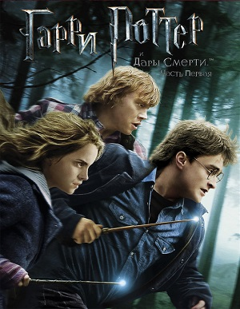
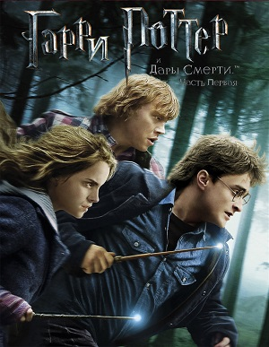
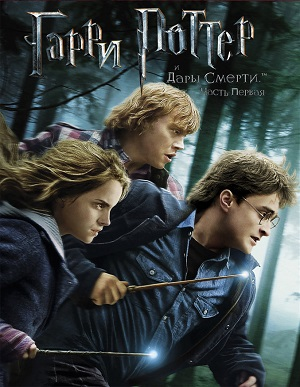

Гарри Поттер (англ. Harry Potter) — серия фильмов, основанных на книгах о Гарри Поттере английской писательницы Дж. К. Роулинг. Серия выпущена компанией Warner Bros. и состоит из одиннадцати фильмов в жанре фэнтези, включая основную серию — начиная с «Гарри Поттер и философский камень» (2001) и заканчивая «Гарри Поттер и Дары Смерти. Часть 2» (2011), — а также спин-офф «Фантастические твари и где они обитают» (2016) и его сиквелы.
Серия фильмов спродюсирована Дэвидом Хейманом, а Дэниел Рэдклифф, Руперт Гринт и Эмма Уотсон сыграли роли главных героев: Гарри Поттера, Рона Уизли и Гермионы Грейнджер. Над серией работали 4 режиссёра: Крис Коламбус, Альфонсо Куарон, Майк Ньюэлл и Дэвид Йейтс. Франшиза занимает 4-е место в списке самых прибыльных серий фильмов с 9,2 млрд $ мировой прибыли.
«Гарри Поттер и Дары Смерти» — седьмая, заключительная книга и единственная из серии, которая была поделена на два полнометражных фильма. Первая часть вышла в ноябре 2010 года, а вторая часть вышла в июле 2011 года.
В 2016 году вышел спин-офф, который рассказывает о событиях, произошедших за 65 лет до начала основной саги — «Фантастические твари и где они обитают», основанный на одноимённой книге. Серия «Фантастических тварей» стала продолжением франшизы, а Джоан Роулинг сообщила, что будет пять частей. В 2018 году вышел фильм «Фантастические твари: Преступления Грин-де-Вальда», а в апреле 2022 года — «Фантастические твари: Тайны Дамблдора».
1 января 2022 года состоялась премьера спецвыпуска «Возвращение в Хогвартс».

| Год(-ы) | Фильмы |
| 1926 | «Фантастические твари и где они обитают» (2016) |
| 1927 | «Фантастические твари: Преступления Грин-де-Вальда» (2018) |
| 1932 | «Фантастические твари: Тайны Дамблдора» (2022) |
| 1981, 1991—1992 | «Гарри Поттер и философский камень» (2001) |
| 1992—1993 | «Гарри Поттер и Тайная комната» (2002) |
| 1993—1994 | «Гарри Поттер и узник Азкабана» (2004) |
| 1994—1995 | «Гарри Поттер и Кубок огня» (2005) |
| 1995—1996 | «Гарри Поттер и Орден Феникса» (2007) |
| 1996—1997 | «Гарри Поттер и Принц-полукровка» (2009) |
| 1997—1998 | «Гарри Поттер и Дары Смерти. Часть 1» (2010) |
| 1998, 2017 | «Гарри Поттер и Дары Смерти. Часть 2» (2011) |
«Гарри Поттер» (англ. «Harry Potter») — серия романов, написанная британской писательницей Дж. К. Роулинг. Книги представляют собой хронику приключений юного волшебника Гарри Поттера, а также его друзей Рона Уизли и Гермионы Грейнджер, обучающихся в школе чародейства и волшебства Хогвартс. Основной сюжет посвящён противостоянию Гарри и тёмного волшебника по имени лорд Волан-де-Морт, в чьи цели входит обретение бессмертия и порабощение магического мира.
Начиная с публикации первого романа «Гарри Поттер и философский камень» 26 июня 1997 года книги серии обрели огромную популярность, признание критиков и коммерческий успех во всём мире. По состоянию на февраль 2018 года количество проданных книг составило около 500 миллионов экземпляров, вследствие чего серия вошла в список литературных бестселлеров. Романы переведены на 80 языков, в том числе на русский. Последние четыре книги последовательно поставили рекорды, как наиболее быстро продаваемые литературные произведения в истории.
Серия представляет собой совмещение многих жанров, среди которых — фэнтези и подростковый роман с элементами приключений, детектива, триллерa и любовного романа, а также включает в себя немало культурных отсылок. По словам Роулинг, главной темой романов является смерть, хотя они и рассматриваются в первую очередь как детская литература. Помимо этого в серии затронуты такие темы, как предрассудки и коррупция Первоначально главными издателями книг являлись Bloomsbury в Великобритании и Scholastic Press в США. С тех пор серия была опубликована многими издательствами по всему миру. Книги были экранизированы кинокомпанией Warner Bros. Pictures в виде серии из восьми фильмов, ставшей одной из самых прибыльных в истории кинематографа. Популярность книг также привела к возникновению самых различных товаров, вследствие чего бренд «Harry Potter» оценивается в сумму свыше 12,78 млрд долларов.
Основная серия:
Официальные дополнения: